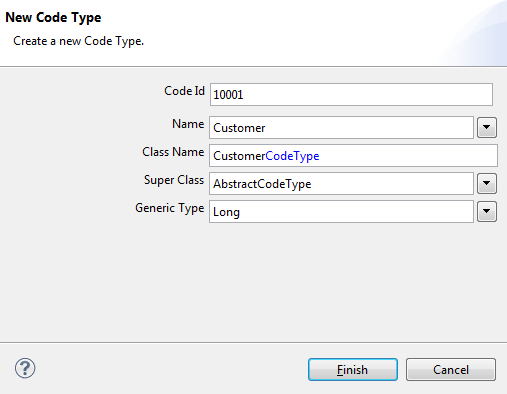
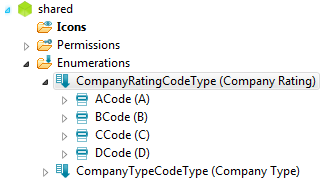
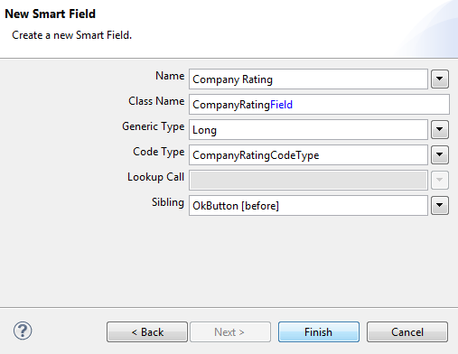

| Code Types | ||
|---|---|---|
| | |
| Reorganize the tree | Lookup Calls and Lookup Services | |
Code Types always contain of an ID and a list of values.
Open the shared node in Eclipse Scout and expand the tree until you reach the Enumerations node. Right-click on the node and choose New Codetype… menu.
The Code ID needs to be an unique number, which helps to identify the values belonging to the Code Type.
The convention usually followed is that we always leave enough space between the Code Type's IDs, because the Code Type's values need IDs as well. The idea is that the IDs of Code Types and their values are close together (e.g. Code Type has the number 10000 and its values range from 10001 to 10099; the next Code Type has the number 10100).
Enter the information into the Code Type form according to the picture:

Right-click on the newly created Code Type and choose ''New Code… ''
Increase the CompanyType Code Type's ID by 1 and assign it to the Code ID field. Give it a name like Customer.

Repeat these last two steps for two other codes called Supplier (Code ID: 10002), and Other (Code ID: 10003).
So let's use the code type inside the Company Form: we are going to add a Radio Button Group containing those two values.
In a Radio Button Group only one item can be selected at a time. This is exactly what we need here, as we don't like a company being both, customer and supplier.
Back in Scout Explorer we expand the tree like: client > Forms > CompanyForm and right-click on MainBox to choose New Form Field…
Choose RadioButtonGroup as Type, give it a name like CompanyType and press Finish.
In the properties editor go to the property Code Type and choose the Code Type CompanyTypeCodeType we have previously created. That’s all we need to do to fill the Code Type's values into the Radio Button Group.
After adding this additional field, don't forget to update the form data: right-click on the CompanyForm and choose "Update Form Data"
If you want to add a new code type to your application, you probably need a new column in the database model as well. For our example you may use
ALTER TABLE minicrm.company ADD COLUMN type_uid int;
To read and write the values for the new Radio Button Field on the company dialog from and to the database, we need to adjust the CompanyProcessService:
public CompanyFormData create(CompanyFormData formData) throws ProcessingException {
if (!ACCESS.check(new CreateCompanyPermission())) {
throw new VetoException(TEXTS.get("AuthorizationFailed"));
}
SQL.selectInto("" +
"SELECT MAX(COMPANY_NR)+1 " +
"FROM COMPANY " +
"INTO :companyNr"
, formData);
/*
* NEW: TYPE_UID behind INSERT INTO
* NEW: :companyTypeGroup in VALUES, field is named according to the inner class CompanyTypeGroup
* of CompanyForm
*/
SQL.insert("" +
"INSERT INTO COMPANY (COMPANY_NR, SHORT_NAME, NAME, TYPE_UID) " +
"VALUES (:companyNr, :shortName, :name, :companyTypeGroup)"
, formData);
return formData;
}
public CompanyFormData load(CompanyFormData formData) throws ProcessingException {
if (!ACCESS.check(new ReadCompanyPermission())) {
throw new VetoException(TEXTS.get("AuthorizationFailed"));
}
/*
* NEW: TYPE_UID in SELECT
* NEW: :companyTypeGroup behind INTO, field is named according to the inner class CompanyTypeGroup
* of CompanyForm
*/
SQL.selectInto("" +
"SELECT SHORT_NAME, " +
" NAME," +
" TYPE_UID " +
"FROM COMPANY " +
"WHERE COMPANY_NR = :companyNr " +
"INTO :shortName," +
" :name, " +
" :companyTypeGroup"
, formData);
return formData;
}
public CompanyFormData store(CompanyFormData formData) throws ProcessingException {
if (!ACCESS.check(new UpdateCompanyPermission())) {
throw new VetoException(TEXTS.get("AuthorizationFailed"));
}
/*
* NEW: TYPE_UID = :companyTypeGroup in SET, field is named according to
* the inner class CompanyTypeGroup of CompanyForm
*/
SQL.update("" +
"UPDATE COMPANY " +
" SET SHORT_NAME = :shortName, " +
" NAME = :name, " +
" TYPE_UID = :companyTypeGroup " +
"WHERE COMPANY_NR = :companyNr "
, formData);
return formData;
}
Repeat the steps above for a new code type CompanyRatingCodeType with the values A, B, C, D for both the database and the new enumeration on the shared node in the Scout Explorer.
Use id 10100 for the CompanyRatingCodeType, so that you have enough space to add other company types.
The result should look similar to

Back in Scout Explorer expand the tree: client > Forms > CompanyForm > MainBox, right-click on MainBox and use context menu ''New Form Field… '' Add a new form field of type SmartField with the name Company Rating and select CompanyRatingCodeType as the code type.

As in the case abovee for the code type Company Type you will need to update the database model. For reading and writing from and to the database we need to update the methods of the CompanyProcessService once more
public CompanyFormData create(CompanyFormData formData) throws ProcessingException {
if (!ACCESS.check(new CreateCompanyPermission())) {
throw new VetoException(TEXTS.get("AuthorizationFailed"));
}
SQL.selectInto("" +
"SELECT MAX(COMPANY_NR)+1 " +
"FROM COMPANY " +
"INTO :companyNr"
, formData);
/*
* NEW: RATING_UID behind INSERT INTO
* NEW: :companyRating in VALUES, field is named according to the inner class CompanyRating
* of CompanyForm
*/
SQL.insert("" +
"INSERT INTO COMPANY (COMPANY_NR, SHORT_NAME, NAME, TYPE_UID, RATING_UID) " +
"VALUES (:companyNr, :shortName, :name, :companyTypeGroup, :companyRating)"
, formData);
return formData;
}
public CompanyFormData load(CompanyFormData formData) throws ProcessingException {
if (!ACCESS.check(new ReadCompanyPermission())) {
throw new VetoException(TEXTS.get("AuthorizationFailed"));
}
/*
* NEW: RATING_UID in SELECT
* NEW: :companyRating behind INTO, field is named according to the inner class CompanyRating
* of CompanyForm
*/
SQL.selectInto("" +
"SELECT SHORT_NAME, " +
" NAME," +
" TYPE_UID, " +
" RATING_UID " +
"FROM COMPANY " +
"WHERE COMPANY_NR = :companyNr " +
"INTO :shortName," +
" :name, " +
" :companyTypeGroup, " +
" :companyRating "
, formData);
return formData;
}
public CompanyFormData store(CompanyFormData formData) throws ProcessingException {
if (!ACCESS.check(new UpdateCompanyPermission())) {
throw new VetoException(TEXTS.get("AuthorizationFailed"));
}
/*
* NEW: RATING_UID = :companyRating in SET, field is named according to
* the inner class CompanyRating of CompanyForm
*/
SQL.update("" +
"UPDATE COMPANY " +
" SET SHORT_NAME = :shortName, " +
" NAME = :name, " +
" TYPE_UID = :companyTypeGroup, " +
" RATING_UID = :companyRating " +
"WHERE COMPANY_NR = :companyNr "
, formData);
return formData;
}
In the Example above we added a Smart Field to choose a rating between A and D on the Company Form. To improve the usability of the company form, the rating field should only become visible, when the users selects 'Customer as the company type.
As there is a dependency between fields, we have to define a Master – Slave relation between the company type and the company rating field. For this we specify the master field on the (slave) form field.
Expand the tree in the Scout Explorer like: client > Forms > CompanyForm > MainBox > CompanyRatingField. Set the Master Field and Master Required as shown in the picture below.

Untick Visible in the scout object properties of the CompanyRatingField.
Clicking on the green plus right of method Exec Changed Master Value adds the method execChangedMasterValue to the (slave) company rating field. Now we can control the fields visibility depending on the selected company type as follows
@Override
protected void execChangedMasterValue(Object newMasterValue) throws
ProcessingException {
if (CompareUtility.equals(getCompanyTypeGroup().getValue(),
CompanyTypeCodeType.CustomerCode.ID)) {
setEnabled(true);
setVisible(true);
}
else {
setEnabled(false);
setVisible(false);
setValue(null);
}
}
When execChangedMasterValue is called, we check if the customer type value equals the Customer code. If so, the fields is set visible and enabled. In all other cases the field has to be invisible and disabled, as well as set to null nothing must be written to the database.
This method execChangedMasterValue is called whenever the value in the defined master field (the company type field in this example) of the slave field (company rating field here) is changed.
Now that the Form works, we have to make sure that the rating value can be read and written from and to the database. So let's change the CompanyProcessService once more.
Whenever we want to display a Code Type in a table, we cannot just use the value returned by the database query. This out of the reason that Code Types IDs are stored and displaying IDs would mean nothing to a user.
Instead we use a Smart Column, tell it which Code Type will be returned and let it translate the ID into a name. So let's add a new column to the CompanyTablePage and extend the StandardOutlineService.
Expand the tree in Scout Explorer like: client > All pages and right-click on CompanyTablePage > Table > Columns and choose New Column…
Choose type Smart Column and fill in the information according to the picture.
Adjust the getCompanyTableData method in the StandardOutlineService (server > Outline Services > StandardOutlineService):
/* * NEW: TYPE_UID behind SELECT */ statement.append( "SELECT COMPANY_NR, " + " SHORT_NAME, " + " NAME, " + " TYPE_UID " + " FROM COMPANY " + " WHERE 1 = 1 ");
|  | |
| Reorganize the tree | Lookup Calls and Lookup Services |